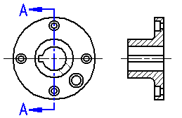
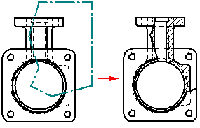
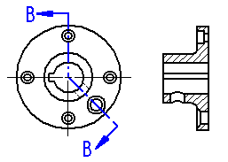
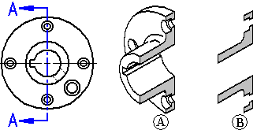
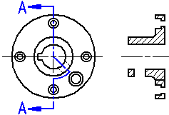
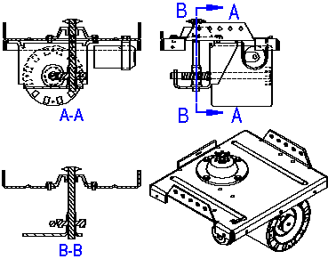
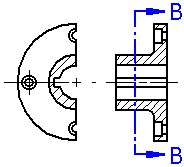
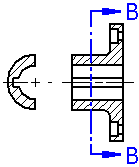
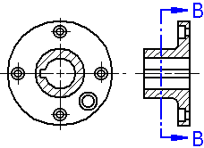
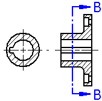

Section views
After you create a part view, you can use it to create a section view. A section view displays a cross section of the 3D part or assembly model. Sectioned areas are automatically filled.
You can create section views with the Section View command and the Broken-Out command.
Before you can create a section view with the Section View command, you must create a cutting plane on the part view you want to use as the basis for the section view using the Cutting Plane command.

You can use the Broken-Out command to create a broken-out section view of internal regions to a depth you define. This allows you to expose interior features of a part so you can document them. With the Broken-Out command you draw the profile within the command.

Selecting a part view
When you click the Cutting Plane button you are prompted to select a part view. This can be any orthographic, auxiliary, or detail view on the drawing.
Auxiliary views often show the part at the optimal orientation for making the section cut. A detail view can be useful for creating sections due to its scale.
Sections created from detail views inherit the same scale as the detail view.
Placing the section view
When you select the Section View command, you are prompted to select a cutting plane. After you select the cutting plane:
-
The drawing view is displayed in dynamic VHL preview mode. You can move the view around on the sheet.
-
You can use the options on the command bar to specify the type of section view you want to create.
When you click to place the view, the section view is created so that it is aligned with the cutting plane.
The view direction of the section view is defined by the cutting plane. The side on which you place the view, relative to the cutting plane, has no effect on view direction.
Revolved section views
On certain types of parts you can create a revolved section view to more accurately view the features on the part. You can do this by selecting a cutting plane consisting of two or more lines, and then selecting the Revolved Section View option on the command bar.

Section-only (thin-section or paper thin) views
To create a section view that does not include the geometry behind it, use the Section Only button on the command bar. This option creates a section view where only the thin slice of geometry that intersects the cutting plane is displayed. The geometry that is beyond the cutting plane is not processed or displayed. For example, you can create a section view of a part in which the keyway feature is not displayed.

To further illustrate this, if you were to rotate a typical section view and a Section Only section view, you would see half of the part with a typical section view (A), but only a thin slice of the part with a Section Only section view (B).

This option is useful when creating sections of complex parts and assemblies where displaying the geometry behind the cutting plane would be confusing or unnecessary. Section views placed with the Section Only option also process faster than standard section views.
You can also create a revolved section view using the Section Only option.

To learn how, see Create a thin section view.
Thin section views of assemblies
When working with a large or complex assembly, the processing time improvement with the Section Only option can be significant because fewer parts are processed. For example, in Section A-A below, all the parts beyond the cutting plane must be processed in a standard section view, but when you set the Section Only option for Section B-B, only the parts that are intersected by the cutting plane line are processed.

You cannot create additional section views from a Section Only section view.
Creating a section view from an existing section view
You can also create a new section view from an existing section view.

When you create a new section view from an existing section view, you can use the Section Only and Section Full Model options on the command bar to control the appearance of the new section view. For example, when you create the new section view B-B using Section A-A as the source view, there are four output options:
 The Section Only and Section Full Model options are cleared |
 The Section Only option is set |
 The Section Full Model option is set |
 The Section Only and Section Full Model options are set |
The Section Only and Section Full Model options are only available when you create a section view. You cannot change these options when you modify an existing section view.
Section views in assembly drawings
For assemblies, you can specify which parts you want to section by using the Model Display Settings button on the Section View command bar. After the section view is created, you can change these settings by editing the properties of the section view.
The fill angle you specify for the section view is rotated 90 degrees for each sectioned part. After the section view is created, you can edit the fill and apply different styles and overrides.
How do I
Create a section viewCreate a revolved section view
Create a thin-section view
Change section view type
Scale a section view
Set rib hatching in section views
Show or hide cutting plane lines in section views
Learn more
Modifying section viewsSection view and cutting plane captions
Formatting fill and hatch patterns in section views
Look up more details
Section View command (Draft environment)Section View command bar
Override Rib Hatching dialog box